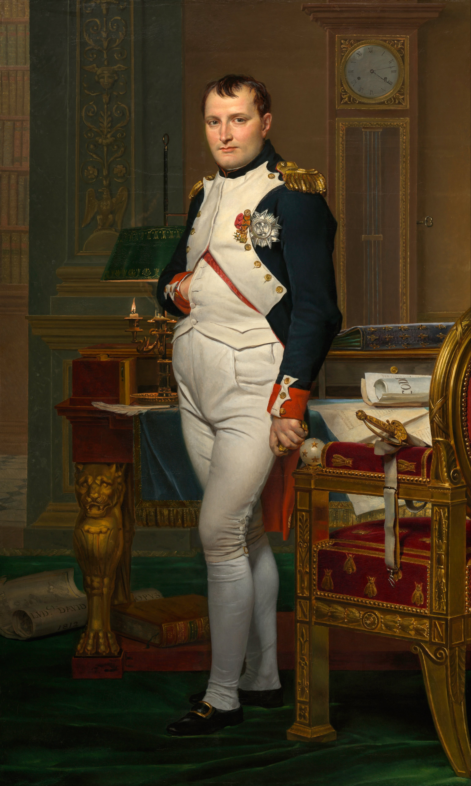

Napoleon Napoleon Bonaparte (fr. Napoléon Bonaparte, franska: [napɔleɔ̃ bɔnɑpaʁt]),
född som Napoleone di Buonaparte, (italienska: [napoleˈoːne di ˌbwɔnaˈparte]),
men tog namnet Napoleon I under sin regeringstid som kejsare,
född 15 augusti 1769 i Ajaccio, Korsika, död 5 maj 1821 på Sankt Helena, Sydatlanten, var Fransmännens kejsare från 18 maj 1804 till 6 april 1814 och återigen (under de hundra dagarna) från 20 mars till 22 juni 1815.[1]
Som fältherre för den franska militärmakten erövrade och härskade han över större delen av västra och centrala Europa och innehade ett par år även makten i Egypten. Det misslyckade fälttåget mot Ryssland försvagade sedan hans position, vilket så småningom ledde till det slutgiltiga nederlaget vid slaget vid Waterloo och hans fall. Sedan Napoleon förlorat slaget i Waterloo blev han avsatt och förvisad till den isolerade ön Sankt Helena mitt ute på Atlanten. Där dog han sex år senare.
Få personer i historien har blivit mer omtalade och föremål för forskning än Napoleon. Hans historiska betydelse är omdiskuterad. De olika synsätten på honom har ofta skapat debatt och oenighet. I Frankrike betraktas han av många som en nationalhjälte. Han framhävs först och främst som en stor fältherre och militär strateg, medan andra ser honom mer som en politiker och reformator. Av andra betraktas han som en stor tyrann. Napoleon är begravd i Hôtel des Invalides i Paris.
| Född | Död | Regeringstid | Företrädare | Efterträdare |
|---|---|---|---|---|
| 15 augusti 1769 Kungariket Frankrike Ajaccio, Korsika, Frankrike | 5 maj 1821 (51 år)Förenade kungariket Storbritannien och Irland Longwood, Sankt Helena | 18 maj 1804 – 6 april 1814 20 mars 1815 – 22 juni 1815 | Franska konsulatet | Ludvig XVIII (de facto) Napoleon II (de jure) |

Napoleon föddes 1769 på Korsika. Fadern Carlo Bonaparte var aktiv inom den korsikanska motståndsrörelsen vid Napoleons födelse, men övergav denna och anslöt sig till Frankrike, vilket belönades med att han blev ledamot i ständerförsamlingen i Versailles. Han avled vid 39 års ålder, vilket gjorde Napoleons mor till änka vid 35 års ålder. Modern hette Laetitia Ramolino och härstammade från den korsikanska adelssläkten Ramolino. Hon födde tretton barn, varav åtta blev vuxna. Familjen talade korsikanska och hade italienska namn, vilka senare förfranskades. Napoleon kallades följaktligen för Nabullione under sin barndom (och Rabulione när han var olydig, vilket Herman Lindqvist har översatt till "den som är överallt, river ner allting och blandar sig i allting"), och släkten hette Buonaparte, inte Bonaparte som senare.[2] Buonaparte och Ramolino var bland de mest kända av Korsikas dåvarande sjuttiosju adelsfamiljer. En annan framträdande familj var Pozzo di Borgo, som var Napoleons familjs främsta rivaler. Eftersom Korsika sedan 1768 varit franskt, och Napoleon föddes året därefter, föddes han som fransk medborgare. Barnens italienska namn förfranskades. Nabullione blev Napoleon. Korsikas franske guvernör, Louis Charles René Marbeuf, var god vän med huset Buonaparte. Vissa historiker har menat att hans förhållande till modern Letizia var intimt och att han rentav skulle vara far till ett av barnen, Louis.[3] Dorothy Carrington har skrivit en bok som behandlar frågan, Napoleon's Parents från 1980.